- Overview
- Creating Report Tables
- Viewing Data of a Report Table
- Editing Report Tables
- Deleting Report Tables
- Regenerating Data Reports
- Importing Report Tables
- Exporting Report Tables
- Including System Variables in Report Tables
- Querying Report Tables
- Querying Report Tables in Dynaforms
- Querying Report Tables in Triggers
- Querying the Current Case in Dynaforms
- Exporting Grids and Checkgroups
- Exporting Data in Report Tables
Overview
The information entered into Dynaform fields and case variables are stored as serialized strings, which are not easy to access with database queries. Report Tables are designed to put case data into a format that can be easily accessed by standard SQL queries or external applications. Report Tables also allows case data to be easily queried in Dynaform fields and to be shared with external reporting tools such as Crystal Reports, Jasper Reports and Pentaho Reporting.
Each time a new case is created, a new record will be added to the Report Table. This record will be updated each time a Dynaform is submitted in the case.
Unsupported Fields
The following fields cannot be used in report tables because they can contain multiple values and are stored differently:
- Checkgroup. To export checkboxes, read this section.
- Grids. To export grids, read this section.
Creating Report Tables
| Warning: Before creating a report table, remember that the variables included in your process must follow the rules in the Naming Variables section to avoid conflicts. |
To create a new Report Table, open the process where it will be used, then go to the Process Objects toolbox at the right-hand side of the process map. Hover the pointer of the mouse over the icon of the Report Tables option and click on the Create button that is displayed to the left:
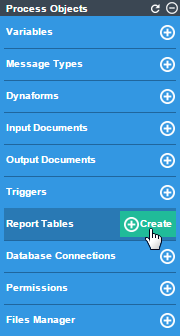
A window will be displayed to define the properties of the new report table:
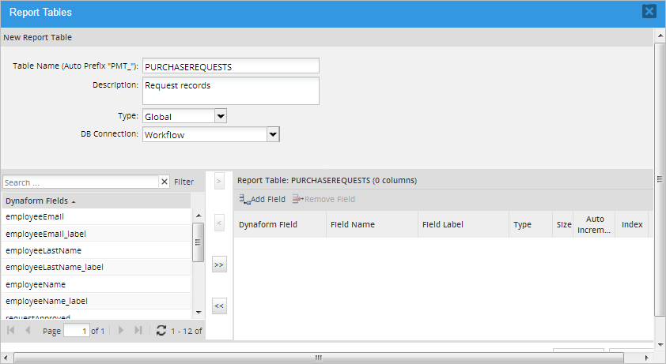
- Table Name: Enter the name of the Report Table.
- Description: Enter a brief description about the report table's content.
- Type: Select what type of Dynaform will be exported to the report table:
-
Global: Export data stored in variables used by Dynaform fields and/or any case variables defined in triggers. This option allows individual variables to be selected for export.
After selecting this option, select which case variables will be exported by clicking the field name and clicking the button. To select multiple fields, hold down the CONTROL or SHIFT keys while clicking on the field names and click on to add the selected fields to the report table. Click on to add all the fields to the report table. To remove a field from the report table, select the field name in the right-hand table and click on
 or click on to remove all the variables from the report table.
or click on to remove all the variables from the report table.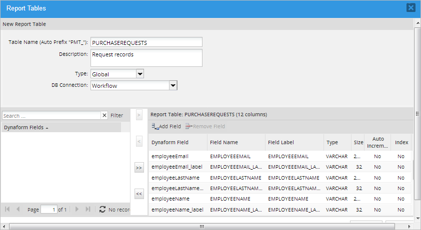
Note: Grid variables, array variables (which are used by checkgroups) and system variables will not appear in the list. If needing to export these variables, see this section.
Besides the fields selected by the user, three system variables fields are included by default to know what case is related to which field values in the wf_<workspace>.APPLICATION table.
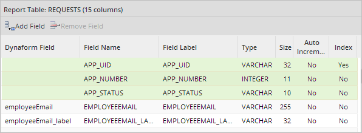
- APP_UID: The case unique ID. This value is useful to obtained the case information. This field can NOT be removed from the report table.
- APP_NUMBER: The case number. Report tables use this value to relate the case information with the case number. This field can NOT be removed from the report table.
- APP_STATUS: The case status. This field can be removed from the report table if desired.
-
- DB Connection: Select the database connection where the new Report Table will be stored:
- Workflow: The report table will be stored in the wf_<WORKSPACE> database for the current workspace.
- Report: This option will only appear if using a workspace was imported from ProcessMaker version 2 which used 3 databases per workspace. The report table will be stored in the database for the current workspace.
- Another database: The Report Table can be stored in any database that has a Database Connection.
Note: It is only possible to create Report Tables in MySQL databases. The list will only show connections to those databases even if the project has connections to other DBMS.
The order of the fields can be changed by dragging and dropping a field from one position to another in the list. It is possible to change the Field Name, Field Label, Type, Size and Index properties of a field by double clicking the row to edit it.

Marking the Index option will index the field so it can be searched faster. It is NOT recommended to reduce the size of VARCHAR fields, because they only use as much space as needed to hold their data, so there is no benefit to reducing the size of the field (VARCHAR fields hold up to 255 characters).
By default, the field names are in upper case, but they can be changed to lower case. Remember that MySQL databases are case-sensitive by default in Linux/UNIX and case-insensitive by default in Windows. It is generally recommended to leave field names in upper case if designing processes which may need to be moved between Windows and Linux/UNIX servers.
Note: The fields in a Report Table cannot be one of the reserved words used by MySQL or PHP. ProcessMaker prevents reserved words from being used, but if using a previous version, make sure not to name the Report Table one of these MySQL reserved words:
ALTER, CLOSE, COMMIT, CREATE, DECLARE, DELETE, DROP, FETCH, FUNCTION, GRANT, INDEX, INSERT,
OPEN, REVOKE, ROLLBACK, SELECT, SYNONYM, TABLE, UPDATE, VIEW, APP_UID, ROW, PMTABLE, TIME
Or one of these reserved words in PHP:
case, catch, cfunction, class, clone, const, continue, declare, default, do, else, elseif, enddeclare, endfor, endforeach,
endif, endswitch, endwhile, extends, final, for, foreach, function, global, goto, if, implements, interface, instanceof, private,
namespace, new, old_function, or, throw, protected, public, static, switch, xor, try, use, var, while
When done defining the new report table, click on the Create button at the end of the panel and the new table will be created and populated with data from all the existing cases in the current process. The new table will be added to the list of available Report Tables (not only inside the project but, it will be also listed in Admin > Settings > PM Tables).

The new table will be stored in the database with a PMT_ prefix. (e.g. PMT_CONTACT_INFO). Remember to include PMT_ in the table name when using the table in SQL queries and external reports applications.
Viewing Data of a Report Table
To view the data stored in a Report Table, click on the Report Tables option in the Process Objects toolbar of the process map to see a list of the available Report Tables.
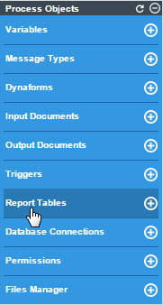
A window will open with a list of the existing report tables.
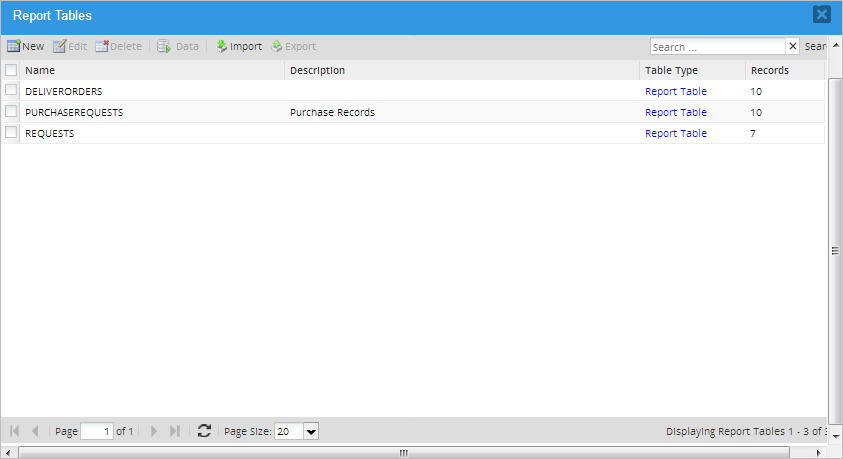
Select a report rable from the list and click on the Data button in the upper menu. A window will open displaying the content of the report table, which is the information filled in while running cases.
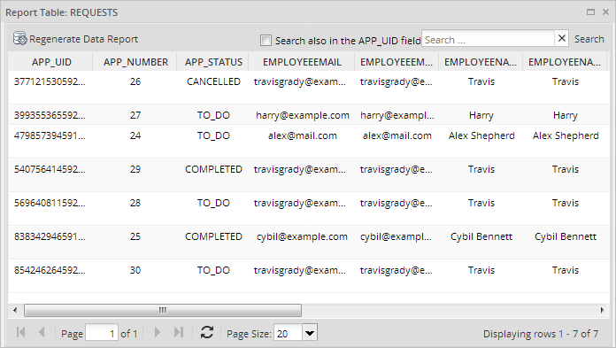
Searching Data Inside a Report Table
To find specific values inside a report table, enter a text to be searched in the Search box, which is located in the upper right-hand corner of the Data window. The search criteria can either contain text or numbers, but it is not possible to include special characters, such as < (less than), > (greater than), % (any number of characters), etc.

The search criteria inserted can be searched in the following columns:
- APP_UID: check the Search also in the APP_UID field to include this column in the search. Search for the case's unique ID number, which is 32 hexadecimal characters long. It is possible to search for only part of the number. For instance, the first 5 numbers in a UID:
55101. - APP_NUMBER: Search a case number.
- APP_STATUS: Search the case status, which can be
TO_DO,DRAFT,PAUSED,CANCELLED,COMPLETEDorDELETED - Other fields: Searches can be conducted in any of the other fields in the report table, except for date and datetime fields, which are not supported as search criteria.
Editing Report Tables
If a new field is added to a master Dynaform, or its field name is changed, the definition of the Report Table will not automatically update to include the new/changed field. The definition of the Report Table will have to be manually updated to include the new/changed field.
For example, using the trigger above, change the caseTask name to caseTaskID and also change its name on the trigger to @@caseTaskID. Then, go to Report Tables and select the name of the Report Table. Click Edit and the modified field will display itself on the list of Dynaforms Fields as it is taken as a new field. Add it to the fields of the Report Table and remove the old field from the list.
If a field is added or changed in a grid form, then the existing Report Table will have to be deleted and then recreated to include the new/changed fields. In recent versions of ProcessMaker it is not necessary to delete and create the Report Table, the new field or information will be updated automatically on the database.
Deleting Report Tables
To delete a Report Table, open the process and click on the Report Tables option of the Process Objects toolbox. In the list, click on the Delete button of the Report Table to remove it from the list and delete its table in the wf_<WORKSPACE> database, depending on the DB Connection previously chosen.
Regenerating Data Reports
Use this option to manually update any data modified while running cases. Go to the list of Report Tables and choose the one to regenerated by clicking on Data. After the data for the specific Report Table displays, click on the Regenerate Data Report option on the upper side of the window.
Consider that while cases are being created and routed, data is created and updated in the Report Tables, therefore, it is not necessary to use the Regenerate Data Report each time.

Importing Report Tables
To import a Report Table, click on the Report Tables option of the Process Objects toolbox and the list of Report Tables available will be displayed. Select one and click on the Import option, in the window that opens click on the file button to select a Report Table from the computer. Remember that as well as PM tables, Report Tables have the .pmt extension.

Once the Report Table has been imported automatically, the corresponding table will be created on the wf_<WORKSPACE> (generally) database, depending on the DB connection previously chosen
When importing, if the option Overwrite if exist? is not checked, and if the Report Table exists, a new Report Table will be created with the current date and time. For example, if the Report Table PMT_RPT_CREDIT_CARD was created, and a Report Table with the same name is imported, the imported Report Table will be named PMT_RPT_CREDIT_CARD_20160824112519, where the numbers are:
- Date: 20160824: Year-Month-Day
- Time: Hour-Minute-Seconds
From Version: 3.0.1.8 on. The Overwrite if exists? checkbox is no longer available and the import procedure is the following:

When importing, if the Report Table is related to a different process, a warning message appears with the following options:
- Import and relate it to the current process: The Report Table will be imported and related to the current process.
- Do not import the Report Table: Cancels the import of the Report Table.
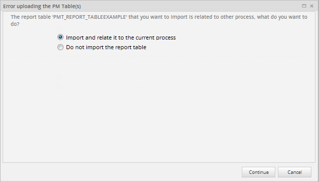
If the Report Table(s) already exist, a window will show the following options for each conflicted Report Table:
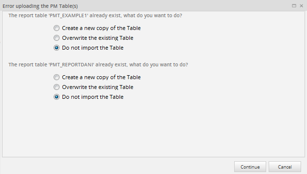
- Create a new copy of the Table: The Report Table will be imported with a name composed of the original
name plus the current datetime.
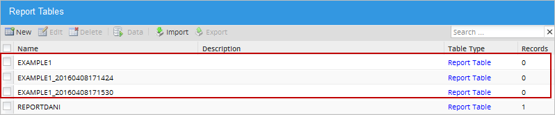
- Overwrite the existing Table: The existing PM Table will be overwritten by the imported one.
- Do not import the Table.
It is also possible to import a Report Table by going to Admin > Settings > PM Tables and selecting the Import option in the toolbar.
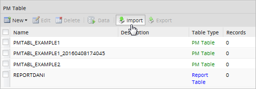
However, this option is only available for Report Tables related to processes in the current workspace. Otherwise, the following error message will display:
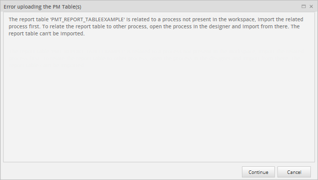
Exporting Report Tables
Note: It is recommended to export PM Tables and Report Tables separately.
To export a Report Table, click on the Report Tables option of the Process Objects toolbar and the list of Report Tables available will be displayed. Select the report table that will be imported and click on Export. A window with two options will be displayed:
- Schema: By checking this option, the Report Table will be exported with the structure of the fields but no data.
- Data: Data export for Report Tables is not allowed because the data comes from cases, and information stored in cases can't be exported.
Like PM tables, the export files for Report Tables have the .pmt extension.

Including System Variables in Report Tables
System variables, such as @@TASK or @@USER_LOGGED, are not available in the list of variables that can be included in Report Tables. These values may be useful for queries based upon a particular user, task, process, etc.
To export a system variable, create a trigger that will assign the value of a system variable to a case variable. For example:
@@caseUserName = @@USR_USERNAME;
@%caseIndex = @%INDEX;
@@caseTask = @@TASK;
@@caseProcess = @@PROCESS;
Then, set the trigger to fire at various points in the process where the Export Table should be updated with new values for the system variables. Remember that the values of system variables change over the course of a case, so the trigger should be fired whenever the new values need to be exported to the Report Table. After defining the trigger, change the definition of the Report Table to include the new case variables which were defined in the trigger.
Querying Report Tables
Report Tables can be queried with the Sql property in Dynaform fields or by calling the executeQuery() function in triggers.
To query a Report Table in a Dynaform field, first set the SQL Connection property for the field to the database where the Report Table is stored. If it is in the wf_<WORKSPACE> database for the current workspace, then either set it to workflow or leave it blank. If found in the rp_<WORKSPACE> database for the current workspace, then select report (for workspaces migrated from version 2 to version 2.8 or higher). For any other database (including databases in other workspaces), first create a Database Connection to that database, and then select it in the Sql Connection property.
Querying Report Tables in Dynaforms
In the field's Sql property enter a SELECT statement to query the Report Table. Remember that the Report Table has the prefix PMT_ in its table name. If populating a dropdown, listbox, suggest box, checkgroup or radiogroup, remember that the SQL query needs to return two fields, where the first field is the value and the second field is the label for each option.
Example:
Get a list of all the clients used in previous cases for a suggest box, so that users do not have to remember the full name of clients when filling in a form. If the Report Table is named CLIENTS and has the fields CLT_ID, CLT_FIRSTNAME and CLT_LASTNAME, then the following query can be used to populate the suggest box:
DISTINCT is used to eliminate duplicates and the second field is a concatenation of the client's first and last names, so both can be displayed in the suggest box.
Querying Report Tables in Triggers
The executeQuery() function can be used to query Report Tables in Triggers. In the Report Table, each case is stored as a separate record and the table has the APP_UID, APP_NUMBER and APP_STATUS fields, so that it is possible to search for the data from specific cases.
Example:
This example shows how to populate a grid with data from the current case and from all the other cases whose status is currently TO_DO. It queries a Report Table named PRODUCTS which has the fields PRO_NAME, PRO_TYPE and PRO_DESC. It is stored in a remote database which has a Database Connection with the UID of "17848610856943f64e405e8058194105".
First, create a grid named "products", which contains the textbox fields "productName", "productType" and "productDescription". Then, create a trigger with the following code to populate the @=products variable which is used by this grid:
$currentCase = @@APPLICATION;
$query = "SELECT PRO_NAME AS productName, PRO_TYPE AS productType, PRO_DESC AS productDescription
FROM PMT_PRODUCTS WHERE APP_UID = '$currentCase' OR APP_STATUS = 'TO_DO' ";
@=products = executeQuery($query, $db);
Note that it is not possible to insert case variables in the middle of strings like normal PHP variables, so first assign the case ID in @@APPLICATION to the $currentCase variable so it can be inserted into the SQL query. Because the fields in the Report Table have different names than the fields in the grid, they have to be renamed using AS. Remember that field names in grids are case sensitive, so "productType" is different than "ProductType" and "PRODUCTTYPE".
The database query returns an associative array of associative arrays, which is also how grids are stored in ProcessMaker. For example, this database query might return the following data which is placed in the grid:
'1' => array("productName" => "E-Z PencilMate", "productType" => "Office supplies", "productDescription" => "Holds multiple pencils"),
'2' => array("productName" => "Brite 30W Lamp", "productType" => "Office furniture", "productDescription" => "Upright lamp with shade"),
'3' => array("productName" => "Sleeptite pillow", "productType" => "Bed assessory", "productDescription" => "Goose feather pillow")
)
Set the above trigger to fire BFORE the Dynaform that contains the "products" grid. When the Dynaform is displayed while running a case, the grid should be populated with the data from the current case and from previous cases with "TO_DO" status.
Querying the Current Case in Dynaforms
To use the unique ID of the current case in an SQL query of a Report Table, create a hidden field in the Dynaform, which is named "APPLICATION". When the Dynaform is rendered while running a case, the unique ID of the current case stored in the @@APPLICATION system variable will automatically be placed in the "APPLICATION" field where it can be used in SQL queries.
Example:
A textarea field needs to display all the users who have worked on the current case in a dropdown box, so that the current user can select the user who will be assigned to the next task in the process. The following SQL query looks up all the users who have worked on the current case by using the current case's UID stored in the "APPLICATION" hidden field.
FROM USERS U, APP_DELEGATION AD WHERE AD.APP_UID = @@APPLICATION AND AD.USR_UID = U.USR_UID
Exporting Grids and Checkgroups
Grids and checkgroups are designed to hold multiple values, so they can't be stored very easily in Report Tables. It is possible to create a trigger which converts the values stored in these fields to JSON Strings and stores them in string variables. These string variables can be included in the Report Table, like other variables. The difficulty of storing them as JSON Strings is that they have be converted from JSON to an object when needing to read them. This means that the values can't be viewed easily using just the database software. Almost all programming languages have a JSON decode function, such as JSON.parse() in JavaScript, json_decode() in PHP and json.loads() in Python, but this means that code will have to be executed before viewing the values.
The other option is to manually create another table in the database to hold the values stored in these fields. A trigger can be used to export the variables used by grids and checkgroups to this table. Using a separate table allows the values to be viewed with ordinary database software and accessed with normal SQL queries. See the following instructions to implement either of these solutions.
Storing as JSON Strings
To store the values of checkgroups and grids as JSON Strings, first add an additional string variable in the graphical interface for each checkgroup or grid. Then, add a trigger that is set to fire after the Dynaform that contains the checkgroups and grids. Convert the values of the checkgroups and grids into JSON Strings and save them in the string variables. Then, add those string variables to the Report Table.
A process has the "selectCountry" checkgroup and the "clientsList" grid:

Add two string variables named "selectCountryValuesJson" and "selectCountryLabelsJson" to hold the values and labels of the selected options in the "selectCountry" checkgroup. Also add a string variable named "clientsListJson" to hold the grid converted to a JSON Strings.

Then, create the following trigger to store the values of these grids as JSON Strings in the string variables:
@@selectCountryValuesJson = json_encode(@=selectCountry);
@@selectCountryLabelsJson = @@selectCountry_label; //already a JSON string
//export a grid as a JSON string:
@@clientsListJson = json_encode(@=clientsList);
Set this trigger to execute after the Dynaform that contains the checkgroup and grid. Then add the selectCountryValuesJson, selectCountryLabelsJson and clientsListJson variables to the Report Table so they will automatically be exported by ProcessMaker when cases are run.

The values and labels selected in a checkbox are generally not difficult to read with the human eye. For example, the "selectCountryJson" and "selectCountryJsonLabels" variables might contain:
It is easier to read when spacing is added:
"1": {
"name": "E-Z Accounting",
"name_label": "E-Z Accounting",
"address": "287 W. Oak Av.\r\nLong Branch NJ 87364",
"address_label": "287 W. Oak Av.\r\nLong Branch NJ 87364",
"hasContract": "1",
"hasContract_label": "true"
},
"2": {
"name": "Swift Cleaning Corp",
"name_label": "Swift Cleaning Corp",
"address" : "2736 W. 11th\r\nWest Palm Beach FL 38725",
"address_label": "2736 W. 11th\r\nWest Palm Beach FL 38725",
"hasContract" : "0",
"hasContract_label": "false"
},
"3" : {
"name": "Trusty Lawn Services",
"name_label": "Trusty Lawn Services",
"address": "371 Main St.\r\nCloverdale IN 46135",
"address_label": "371 Main St.\r\nCloverdale IN 46135",
"hasContract": "1",
"hasContract_label": "true"
}
}
When these variables are automatically exported to the Report Table as JSON Strings, they will probably need to be decoded. For example, the following trigger code pulls these values from the Report Table named "PMT_CLIENT_INFO" with a database query using executeQuery(). In a previous Dynaform, the user enters the number of the case whose values should be copied into the "selectCountry" and "clientsList" variables of the current case. The json_decode() function is used to decode the JSON Strings. When decoding the grid, the second parameter of json_decode() is set to true to convert from an object to an associative array.
$query = "SELECT SELECTCOUNTRYVALUESJSON, SELECTCOUNTRYLABELSJSON, CLIENTSLISTJSON
FROM PMT_CLIENTS_INFO where APP_NUMBER = '$caseNo' ";
$result = executeQuery($query);
if (is_array($result) and count($result) > 0) {
@=selectCountry = json_decode($result[1]['SELECTCOUNTRYVALUESJSON']);
@@selectCountry_label = $result[1]['SELECTCOUNTRYLABELSJSON'];
@=clientsList = json_decode($result[1]['CLIENTSLISTJSON'], true);
}
Storing Grids in a Separate Table
Another way to export a grid is to create a separate table to hold the values entered into the grid's fields. If storing inside ProcessMaker, a PM Table can be created to hold these values, or a table can be created in an external database.
For example, if using if using the "clientsList" grid from the previous example, then create a PM Table named CLIENTS_LIST with the following fields: APP_UID, APP_NUMBER, ROW_NO, NAME, ADDRESS, HAS_CONTRACT.
Then, create the following trigger to write the values in the grid to the PM Table:
//look up the case number (and case status if needed):
$result = executeQuery("SELECT APP_NUMBER, APP_STATUS FROM APPLICATION WHERE APP_UID='$caseId'");
$caseNo = $result[1]['APP_NUMBER'];
//first delete all existing records from this case, if updating:
executeQuery("DELETE FROM PMT_CLIENTS_LIST WHERE APP_UID='$caseId' ");
//then insert a new record for each row in the "clientsList" grid
for ($rowNo = 1; $rowNo <= count(@=clientsList); $rowNo++) {
$name = @=clientsList[$rowNo]['name'];
$address = @=clientsList[$rowNo]['address'];
$hasContract = @=clientsList[$rowNo]['hasContract'];
$query = "INSERT INTO PMT_CLIENTS_LIST (APP_UID, APP_NUMBER, ROW_NO, NAME, ADDRESS, HAS_CONTRACT)
VALUES ('$caseId', '$caseNo', $rowNo, '$name', '$address', '$hasContract')";
executeQuery($query);
}
Set the above trigger to execute after every Dynaform that contains the "clientsList" grid.
Exporting Data in Report Tables
ProcessMaker currently doesn't support the export of the data in Report Tables. However, it is possible to export the data in a Report Table (or PM Table) using PhpMyAdmin.
Direct the web browser to the installation of PhpMyAdmin on your server, which is generally found at:
http://IP-ADDRESS/phpmyadmin
Enter with the "root" user and her password. Then, go to the wf_WORKSPACE database (which is named wf_workflow by default) in the left sidebar. Then, select the table for the Report Table, which will have the prefix PMT_ to open it.
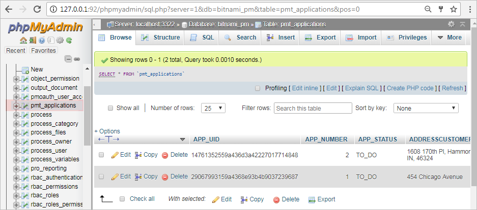
Once the table is open, click on its Export tab in the top menu. Then, select the Format of the data file to export.
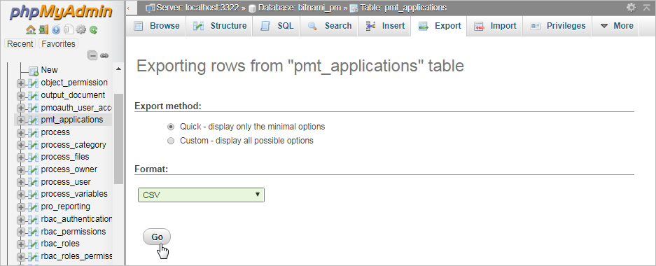
Finally, click on Go at the bottom and it should generate a CSV file that can be imported into any spreadsheet or database.
It is recommended to select CSV for MS Excel if using Microsoft Office and OpenDocument spreadsheet if using OpenOffice or LibreOffice.
Exporting Report Tables with Triggers
It is also possible to export a Report Table (or PM Table) in a process by using trigger code to query the Report Table and construct a CSV (Comma Separated Values) file, which the user can download. This file can then be opened by any spreadsheet or database program. The advantage of using triggers is that ordinary users can obtain the CSV file without the security risk of giving the user access to PhpMyAdmin.
To see a sample process which uses triggers to export Report Tables, download and import Export_Report_Table_or_PM_Table_as_CSV_File-3.pmx (right click on this link and select "Save as..."). Remember to assign users to the first task in the process in order to run cases in this process.
To add this functionality to an existing process, first add an Input Document to the process where the CSV file will be uploaded after it is created with a trigger. Then, edit a Dynaform and add a dropdown box whose ID and variable are named "reportTableName".

Set its sql property to the query:
@@csvFilename variable and set its href property to
the @@csvFileUrl variable. These two variables will be set by trigger code and be automatically
inserted in the Link field when the Dynaform is generated during a case.
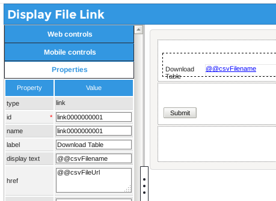
Then, create a trigger which will query the database to get the contents of the Report Table or PM Table selected by the user in the first Dynaform. Add the following code to the trigger:
// Function to prepare the value from char fields for export
// by escapeing "" (double quotation marks) by doubling them and
// replacing '\r\n' with a hard return "\n", which occurs in textareas.
// If necessary, the value is enclosed in "..."
function escapeValue($s) {
$s2 = str_replace('"', '""', $s);
$s2 = str_replace('\r\n', "\n", $s2);
if ($s != $s2 or trim($s2) != $s2) {
$s2 = '"'. $s2 .'"';
}
return $s2;
}
if (empty(@@reportTableName)) {
die("Please select table to export.");
}
$reportTbl = @@reportTableName;
$aFields = executeQuery('DESCRIBE ' . $reportTbl) or
die("Error: Unable to find table '$reportTbl'.");
$aFieldNames = array();
foreach ($aFields as $aField) {
$aFieldNames[] = $aField['Field'];
}
$firstLine = implode('; ', $aFieldNames);
$aRows = executeQuery("SELECT * FROM $reportTbl") or
die("Error: Unable to query table '$reportTbl'.");
$aExportRows = array($firstLine);
foreach ($aRows as $aRow) {
$aExportLine = array();
foreach ($aFields as $aField) {
$val = $aRow[ $aField['Field'] ];
if (strpos($aField['Type'], "char") !== false) {
$val = escapeValue($val);
}
$aExportLine[] = $val;
}
$aExportRows[] = implode(';', $aExportLine);
}
@@sContents = implode("\n", $aExportRows);
$csvFilePath = tempnam(sys_get_temp_dir(), $reportTbl . '_') . '.csv';
@@csvFilename = basename($csvFilePath);
file_put_contents($csvFilePath, @@sContents);
//upload CSV file to Input Document:
$params = array (
'APPLICATION' => @@APPLICATION,
'INDEX' => @@INDEX,
'USR_UID' => @@USER_LOGGED,
'DOC_UID' => $InputDocId,
'APP_DOC_TYPE' => 'INPUT',
'TITLE' => 'CSV file',
'COMMENT' => "CSV file for table $reportTbl",
'ATTACH_FILE' => '@' . $csvFilePath
);
//URL to upload files
$baseUrl = (G::is_https() ? "https://" : "http://") . $_SERVER['SERVER_NAME'] .
($_SERVER['SERVER_PORT'] == '80' ? '' : ':'.$_SERVER['SERVER_PORT']) . //comment out if no port
'/sys' . @@SYS_SYS;
$url = $baseUrl . '/en/neoclassic/services/upload';
ob_flush();
$ch = curl_init($url);
// curl_setopt($ch, CURLOPT_VERBOSE, 1); //Uncomment to debug
curl_setopt($ch, CURLOPT_RETURNTRANSFER, 1);
curl_setopt($ch, CURLOPT_POST, 1);
curl_setopt($ch, CURLOPT_POSTFIELDS, $params);
// curl_setopt ($ch, CURLOPT_SSL_VERIFYHOST, 1); //Uncomment for SSL
// curl_setopt ($ch, CURLOPT_SSL_VERIFYPEER, 1); //Uncomment for SSL
@@response = curl_exec($ch);
curl_close($ch);
if (strpos(@@response, "uploaded successfully") !== false) {
$path = explode('*', @@response)[0];
$filename = basename($path, '.csv');
$fileId = explode('_', $filename)[0];
@@csvFileUrl = $baseUrl . '/en/neoclassic/cases/cases_ShowDocument?a=' . $fileId . '&v=1';
unlink($csvFilePath);
}
else {
die("Error uploading file '$csvFilePath' to $url:\n\n" . @@response);
}
Set this trigger to execute before the second Dynaform that contains the Link field. Make sure to change the $InputDocId variable to the unique ID of the Input Document, which can be found by clicking on its Show ID button when viewing the list of Input Documents.

In this trigger, the first time executeQuery() is called, it looks up the structure of the Report Table or PM Table selected by the user. It uses this information to create the first line of the CSV file which holds the names of the field in the table.
The second time executeQuery() is called, it obtains the contents of the table to be exported. The code then loops through each row in this table and copies the data to the $aExportRows array. In order to export this information correctly, data is passed through the escapeValue() function if the field is a char or varchar, so it might need to have its data enclosed in "" (double quotation marks).
Then, the records in the $aExportRows array is converted into a string with the implode() function. This content is written to a temporary file whose filename is the name of the table plus a randomly generated code. Then, the cURL library is used to upload the temporary file to the Input Document. If the file was successfully uploaded, then the response message will be similar to this text:
The trigger uses explode() and basename() to break up this message and obtain the unique ID of the uploaded file, which in this example is "2930668665729a4e185c473029977042". This ID is used to construct the URL to download the file, which will be something like:
http://example.com/sysworkflow/en/neoclassic/cases/cases_ShowDocument?a=2930668665729a4e185c473029977042&v=1
When a case is run, the user will first select the table to export:

Then, the second Dynaform will contain a link to download the generated CSV file:

Click on the link to download the CSV file to the local computer. When opening the CSV file in a spreadsheet program, make sure to select that the character set is UTF-8 and that the values are separated by semicolons. For example, when opening the CSV file in OpenOffice or LibreOffice, the following settings are selected when importing the file: